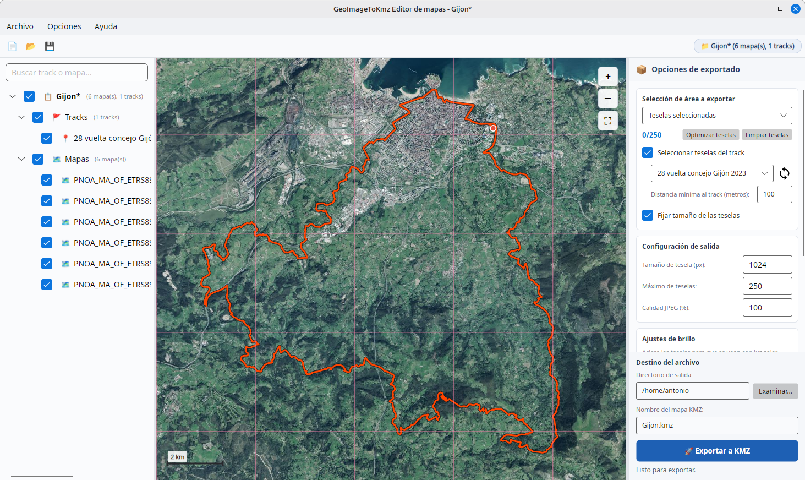
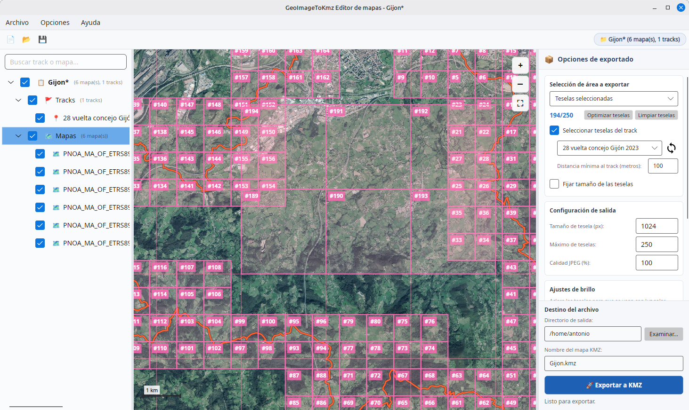

Erste Schritte
- Öffnen Sie den Editor und laden Sie eine oder mehrere georeferenzierte, von GDAL unterstützte Rasterdateien über Karten laden oder durch Ziehen in das Fenster.
- Wenn Sie eine Route verwenden möchten, laden Sie über Tracks laden eine GPX-Datei. Damit können Sie eine Karte rund um den Track erstellen.
- Prüfen Sie die sichtbaren Ebenen, wählen Sie einen Bereich und die Exporteinstellungen aus und legen Sie das KMZ-Ziel fest.
- Klicken Sie auf Als KMZ exportieren, warten Sie auf die Bestätigung und prüfen Sie das Ergebnis im Zielprogramm oder auf dem Zielgerät.
Starten Sie die Anwendung unter Windows über die .exe-Datei. Führen Sie sie unter Linux mit ./GeoImageToKmzMapEditor aus.

Garmin Custom Maps
Diese Anwendung eignet sich gut zum Erstellen von Garmin Custom Maps im KMZ-Format. Die manuelle Erstellung kann mühsam sein, da jedes Gerät eigene Einschränkungen hat.
Da sich die Geräte unterscheiden, prüfen Sie die Grenzen Ihres Geräts und passen Sie die Optionen entsprechend an.
Garmin BaseCamp kann dabei helfen: Wenn Sie versuchen, eine Karte mit mehr als der zulässigen Kachelanzahl zu kopieren, wird ein Fehler angezeigt und auf die überschrittene Grenze hingewiesen.
Die Anwendung wurde mit einem Garmin Edge 850 getestet, dessen Grenze bei 250 Kacheln liegt. Informationen zur Kompatibilität und zu den Grenzwerten sind nicht für alle Geräte eindeutig; möglicherweise müssen Sie die Grenzen Ihres Geräts selbst testen.
Da Kachelgröße und -anzahl begrenzt sind, hängen Qualität und Auflösung der Karte von der Kachelanzahl ab. Mehr Kacheln ermöglichen eine größere oder detailliertere Karte: 250 Kacheln auf einem Quadratkilometer liefern mehr Details als 100 Kacheln auf derselben Fläche. Verwenden Sie möglichst viele Kacheln, die Ihr Gerät erlaubt. Sie können entlang der Route sehr kleine Kacheln auswählen und anschließend herauszoomen, um größere Kacheln mit weniger Details für das Umfeld oder mögliche Ausweichrouten hinzuzufügen.

Oberfläche und Navigation
Das Fenster enthält den Projekt-, Karten- und Track-Baum, den zentralen Kartenbetrachter und den Bereich Exportoptionen. Die Statusleiste zeigt beispielsweise Koordinaten, Ladefortschritt und Fehler an.
Ziehen Sie die Karte, um sie zu verschieben. Verwenden Sie das Mausrad oder die Schaltflächen + und − zum Vergrößern und Verkleinern. Mit Gesamte Karte anzeigen kehren Sie zur Gesamtansicht zurück. Die angezeigten Koordinaten hängen von der Kartenprojektion ab.
Projekte
Unter Datei können Sie ein Projekt erstellen, öffnen, speichern oder unter einem neuen Namen speichern. Projekte verwenden die Erweiterung .gtk. Im Baum können Sie Elemente umbenennen oder schließen. Beim Schließen mit ungespeicherten Änderungen fragt der Editor, ob Sie diese speichern möchten.
Ein Projekt speichert Verweise auf Dateien und Arbeitseinstellungen, einschließlich ausgewählter Kacheln. Bewahren Sie die ursprünglichen Raster- und GPX-Dateien auf und halten Sie ihre Pfade verfügbar: Ein Projekt zu speichern ist nicht dasselbe wie einen KMZ-Export zu erstellen.
Karten und Tracks
Verwenden Sie Karten laden, um unterstützte Rasterdateien wie .tif, .tiff oder .jp2 auszuwählen, und Tracks laden für .gpx-Dateien. Im Baum können Sie Elemente suchen, ihre Sichtbarkeit ändern und sie schließen. Das Kontextmenü bietet unter anderem die Möglichkeit, den übergeordneten Ordner zu öffnen.
Sichtbare Rasterebenen werden exportiert. Blenden Sie nicht benötigte Ebenen aus und prüfen Sie, ob Karten und Track denselben Bereich abdecken. GPX dient zum Anzeigen der Route und zur Bereichsauswahl; der Track wird nicht automatisch als separate Linie in die KMZ-Datei exportiert.
KMZ-Export
Wählen Sie unter Zu exportierender Bereich eine der folgenden Optionen:
- Ausgewählte Karten: verarbeitet die vollständigen sichtbaren Rasterebenen.
- Ausgewählte Kacheln: verarbeitet die im Kartenbetrachter ausgewählten rechteckigen Bereiche.
- Karte auf den Track-Umriss zuschneiden: verwendet das Rechteck um den Track zuzüglich des angegebenen Randes. Es handelt sich nicht um eine Maske, die exakt dem Routenverlauf folgt.
Geben Sie im Exportbereich den Ordner und Dateinamen ein; falls nötig, wird .kmz ergänzt. Klicken Sie auf Als KMZ exportieren und beobachten Sie den Gesamtfortschritt und den Fortschritt der einzelnen Schritte. Während der Verarbeitung können Sie Abbrechen anfordern. Warten Sie die Abbruchmeldung ab, bevor Sie fortfahren.
Kacheln auswählen
Wählen Sie Ausgewählte Kacheln. Klicken Sie im Navigationsmodus auf eine Kartenfläche, um sie hinzuzufügen, oder in eine ausgewählte Kachel, um sie zu entfernen. Ziehen Sie die Karte zum Verschieben. Der Zähler zeigt die ausgewählte und die maximal erlaubte Anzahl. Ist das Maximum erreicht, können manuell keine weiteren Kacheln hinzugefügt werden.
Das Raster stellt geografische Bereiche dar: Solange die Größe nicht fixiert ist, bestimmt die Zoomstufe die Abmessungen jeder Fläche am Boden. Kachelgröße fixieren übernimmt die geografischen Abmessungen der ersten Auswahl für weitere Auswahlen, auch wenn Sie die Zoomstufe ändern. Deaktivieren Sie die Option, um bei einer anderen Zoomstufe neue Abmessungen auszuwählen; vorhandene Auswahlen bleiben erhalten.
Kacheln löschen entfernt die gesamte Auswahl. Kacheln optimieren unterteilt ausgewählte Bereiche gleichmäßig und nutzt dabei das verfügbare Maximum. Die Funktion führt keine Kacheln zusammen und erhöht das Maximum nicht. Wenn nicht genügend Plätze verfügbar sind, ändert sich möglicherweise nichts.
Die geografische Größe der Auswahl ist nicht mit der Kachelgröße (px) identisch, die die Pixelzahl der Ausgabe festlegt.
Arbeitsablauf mit kleinen Kacheln
- Wählen Sie den Kachelmodus, löschen Sie bei Bedarf die Auswahl und zoomen Sie hinein, bis die Flächen kleine Bereiche abdecken.
- Wählen Sie die gewünschten Flächen aus. Um ihre geografische Größe beim Navigieren beizubehalten, aktivieren Sie nach der ersten Auswahl Kachelgröße fixieren.
- Prüfen Sie die Abdeckung und den Zähler. Erhöhen Sie bei Bedarf das Maximum oder verkleinern Sie den Bereich. Legen Sie Ziel und Ausgabe fest und exportieren Sie.
Kleine Bereiche ermöglichen eine genauere Auswahl, benötigen jedoch möglicherweise mehr Kacheln. Prüfen Sie die Grenzen des Zielgeräts.
Bei gleicher Pixelgröße der Ausgabe kann eine Kachel, die weniger Gelände abdeckt, mehr Details erhalten, sofern die Auflösung des Quellbilds ausreicht. Wählen Sie beispielsweise zuerst kleine Kacheln entlang des Tracks aus. Deaktivieren Sie danach die Fixierung, zoomen Sie heraus und ergänzen Sie größere, weniger detaillierte Kacheln, um die Abdeckung zu erweitern.
Arbeitsablauf mit großen Kacheln
- Löschen Sie die Auswahl und zoomen Sie vor der Auswahl heraus, damit jede Fläche ein größeres Gebiet abdeckt. Fixieren Sie die Größe nach der ersten Auswahl, wenn sie bei Zoomänderungen beibehalten werden soll.
- Wählen Sie die benötigten Bereiche aus und prüfen Sie, ob sie die geplante Route oder Region abdecken. Eine große Fläche kann Gelände einschließen, das Sie nicht benötigen.
- Um die Bereiche ohne Änderung der Abdeckung zu unterteilen, klicken Sie auf Kacheln optimieren und prüfen Sie den Zähler. Legen Sie anschließend die Ausgabe fest und exportieren Sie.
Für eine andere Größe löschen Sie die Kacheln oder deaktivieren die Fixierung und ändern den Zoom. Die Optimierung erstellt mehr kleine Auswahlen, garantiert jedoch keine bestimmte Anzahl.
Bereich anhand eines Tracks auswählen
Laden Sie eine GPX-Datei und wählen Sie Karte auf den Track-Umriss zuschneiden, den Track und den Mindestabstand zum Track in Metern aus. Der Export verwendet das um den Rand vergrößerte Begrenzungsrechteck des Tracks und kann deshalb auch weit von der Route entfernte Bereiche enthalten.
Alternativ können Sie unter Ausgewählte Kacheln die Option Kacheln entlang des Tracks auswählen aktivieren, den Track und den Rand festlegen und auf Kacheln auswählen klicken. Dabei werden Zellen in der Nähe der Route ausgewählt. Die bisherige Auswahl wird ersetzt. Prüfen Sie Karte und Zähler: Sobald das Maximum erreicht ist, werden keine weiteren Kacheln hinzugefügt und ein Teil des Tracks kann unbedeckt bleiben.
Die Rastergröße hängt von der Zoomstufe oder – bei fixierter Größe und vorhandener Auswahl – von der ersten ausgewählten Kachel ab. Passen Sie Zoom, Rand und Maximum an und wiederholen Sie die Auswahl, wenn Sie eine andere Abdeckung benötigen.

Ausgabe- und Helligkeitseinstellungen
- Kachelgröße (px): 256 bis 4096; Standardwert 1024. Für Garmin Custom Maps sind 1024 × 1024 Pixel ein gängiger Richtwert. Größere Bilder können an Auflösung verlieren oder von manchen Geräten nicht unterstützt werden.
- Maximale Kachelanzahl: 1 bis 1000; Standardwert 250. Sie begrenzt die Auswahl und wird beim Erstellen der KMZ-Datei verwendet. Die Grenzwerte von Garmin Custom Maps hängen vom Modell ab: Manche Geräte unterstützen 100, andere 500 Kacheln, wobei weitere installierte Karten mitzählen. Prüfen Sie die technischen Daten Ihres Geräts; 250 garantiert keine Kompatibilität.
- JPEG-Qualität (%): 1 bis 100 im Hauptbereich. Höhere Werte erhalten in der Regel mehr Details, benötigen jedoch mehr Speicherplatz.
- Bilder vor dem Erstellen der KMZ aufhellen: aktiviert Anpassungen für Gamma, Helligkeit und Kontrast. Gamma und Kontrast reichen von 0,1 bis 10, die Helligkeit von 0 bis 100 %. Ein Gammawert über 1 hellt Mitteltöne auf; die Helligkeit hebt dunkle Bereiche an und der Kontrast vergrößert den Unterschied zwischen hellen und dunklen Bereichen.
Die Bildverarbeitung kann langsam sein und viel Arbeitsspeicher sowie Festplattenspeicher benötigen, auch wenn das Endergebnis nur wenige Megabyte groß ist. Testen Sie zunächst einen kleinen Bereich und prüfen Sie Lesbarkeit und Dateigröße, bevor Sie einen großen Bereich erstellen. Im Projekt gespeicherte Einstellungen können die Anfangswerte ändern.
Sprache und temporäre Verzeichnisse
Wählen Sie unter Optionen → Sprache Spanisch, Englisch, Französisch oder Deutsch. Unter Optionen → Verzeichnisse können Sie den tatsächlich verwendeten temporären Pfad und den belegten Speicherplatz prüfen. Geben Sie einen eigenen Ordner ein oder wählen Sie ihn aus und klicken Sie auf Speichern. Auf Standard zurücksetzen stellt den temporären Anwendungsordner wieder her.
Achtung: Temporäres Verzeichnis leeren löscht Dateien und Ordner im aktuellen temporären Verzeichnis. Verwenden Sie einen eigens dafür vorgesehenen Ordner, der keine persönlichen Daten enthält, und leeren Sie ihn nicht während der Verarbeitung.
Kartenquellen und Info
Unter Hilfe → Karten öffnet Spanien den Download-Katalog des spanischen Nationalen Geographischen Informationszentrums. Frankreich öffnet den BD-ORTHO-Datensatz des französischen IGN.
Die Anwendung wurde mit PNOA-.tif-Dateien und IGNF-.jp2-Dateien getestet.
Hilfe → Info zeigt den Urheberhinweis „Erstellt von Antonio Muñiz Vega mithilfe von KI“ und weist darauf hin, dass die Anwendung ohne Gewähr bereitgestellt wird und die Nutzung auf eigene Verantwortung und eigenes Risiko erfolgt.
Die Anwendung wird unter der GNU General Public License, Version 3 (GPL-3.0), veröffentlicht. Unter Hilfe → Info können Sie den offiziellen Lizenztext und das Projekt-Repository auf GitHub öffnen.
Die Anwendung verwendet die Geodatenbibliothek GDAL. Besuchen Sie die offizielle Website.
Fehlerbehebung
- Keine sichtbaren Ebenen: Laden Sie eine unterstützte Rasterdatei und aktivieren Sie deren Sichtbarkeit.
- Keine Kacheln oder kein Track ausgewählt: Wählen Sie mindestens eine Fläche aus oder laden und wählen Sie je nach Modus eine GPX-Datei.
- Ein Teil der Route fehlt: Prüfen Sie Abdeckung und Zähler im Kartenbetrachter. Ändern Sie Zoom, Rand oder Maximum und führen Sie die Auswahl erneut aus.
- Laden oder Export nicht möglich: Prüfen Sie, ob die Dateien vorhanden und georeferenziert sind, sowie Berechtigungen, Ausgabepfad, freien temporären Speicherplatz und die Fehlermeldung. Verwenden Sie ein temporäres Verzeichnis mit ausreichend freiem Speicher.
- Die KMZ-Datei sieht anders aus als erwartet: Prüfen Sie sichtbare Ebenen, Bereich und Koordinatenreferenzsystem. Testen Sie Kachelgröße, Qualität und Helligkeit im Zielprogramm oder auf dem Zielgerät.